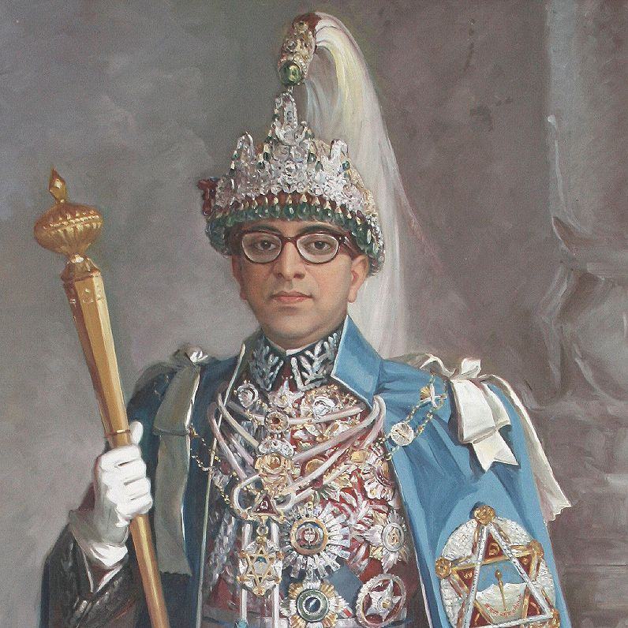

Mahendra Bir Bikram Shah Dev
Biography:
Mahendra Bir Bikram Shah Dev was born on 11 June, 1920 in Narayanhiti Royal Palace, Nepal.
He was the son of Tribhuwan Bir Bikram Shah Dev and Kanti Rajya Lakshmi Devi.
He was the nineth King of Kingdom of Nepal from 13 March, 1955 to 31 January, 1972.
He died at the age of 51 on 31 January, 1972 in Dialo Bangala, Bharatpur, Nepal.